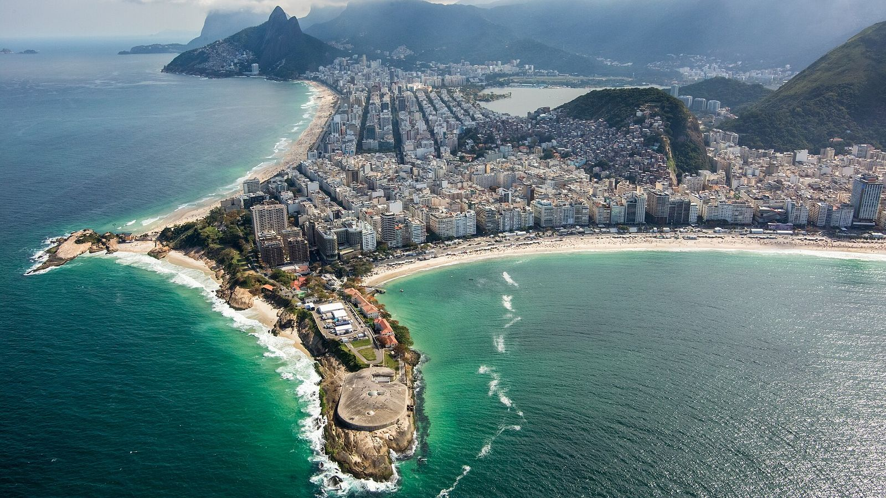

Built to guard the capital
The fort was built between 1908 and 1914 to defend the entrance to Guanabara Bay, when Rio was Brazil's capital.
A concrete fortress on the rocky point at the end of Copacabana beach. Here's what you're looking at, and what to listen for when you get there.
Updated

The rocky point at the end of Copacabana once held a small chapel with a copy of the statue of Our Lady of Copacabana, the patron saint of Bolivia, which gave the beach and the neighbourhood their name.
In 1908 the Brazilian army began a modern coastal fort here to guard the beach and the entrance to Guanabara Bay. Finished in 1914, it has two armoured turrets with German Krupp guns: two of 305 mm, which could fire a shell of some 445 kg up to 23 km, and two of 190 mm. Its cupolas are among the last of their Krupp type left in the world.
On 5 July 1922 young officers turned the fort's guns on the city, starting the tenentista revolts. After the battleship São Paulo shelled the fort, a small group marched out along the beach to fight, the episode remembered as the '18 of the Fort'. The army disbanded its coastal artillery in 1987, and the fort is now a museum.
The fort was built between 1908 and 1914 to defend the entrance to Guanabara Bay, when Rio was Brazil's capital.
Its Krupp guns, up to 305 mm, sat in rotating turrets behind walls up to 12 metres thick.
On 5 July 1922 young officers rose against the government here; a handful marched out along the beach in a revolt remembered as the 18 of the Fort.
Between 1908 and 1914.
The revolt known as the 18 of the Fort, an uprising of young army officers on 5 July 1922.
Yes, it houses the Army History Museum and has cafés with views over the beach.
The rebels of the 1922 revolt at Copacabana Fort. After the fort was shelled, a small group of officers and a civilian marched along the beach to fight government troops; most died.
Two Krupp 305 mm guns and two Krupp 190 mm guns in armoured turrets, installed when the fort was completed in 1914.
Arcos da Lapa · Confeitaria Colombo · Metropolitan Cathedral of Rio de Janeiro · Museu do Amanhã · Real Gabinete Português de Leitura · Theatro Municipal
Rio de Janeiro audio guideEvery landmark in Rio de Janeiro, with the story the app tells you there.